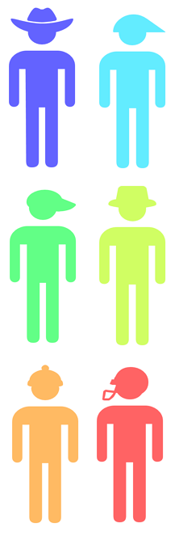

Change Adoption Profiles
The CAPs

The Change Adoption Profiler survey measures the personal characteristics and change attitudes of employees.
This information is joined with demographic data and actual behavioral data to reveal different 'change profiles.'
These profiles help clarify what types of groups exist in the organization and how they will respond to change.
It is then possible to develop a targeted approach applying different interventions to address groups with unique change adoption needs.